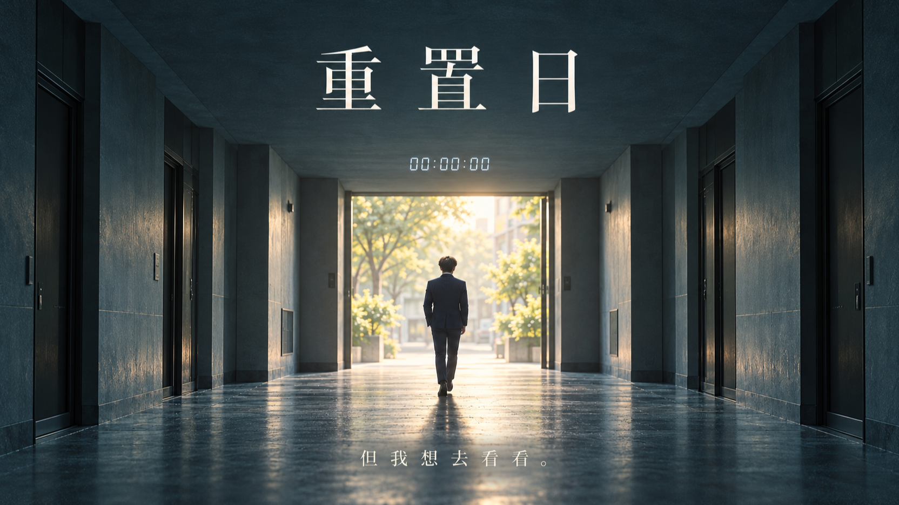
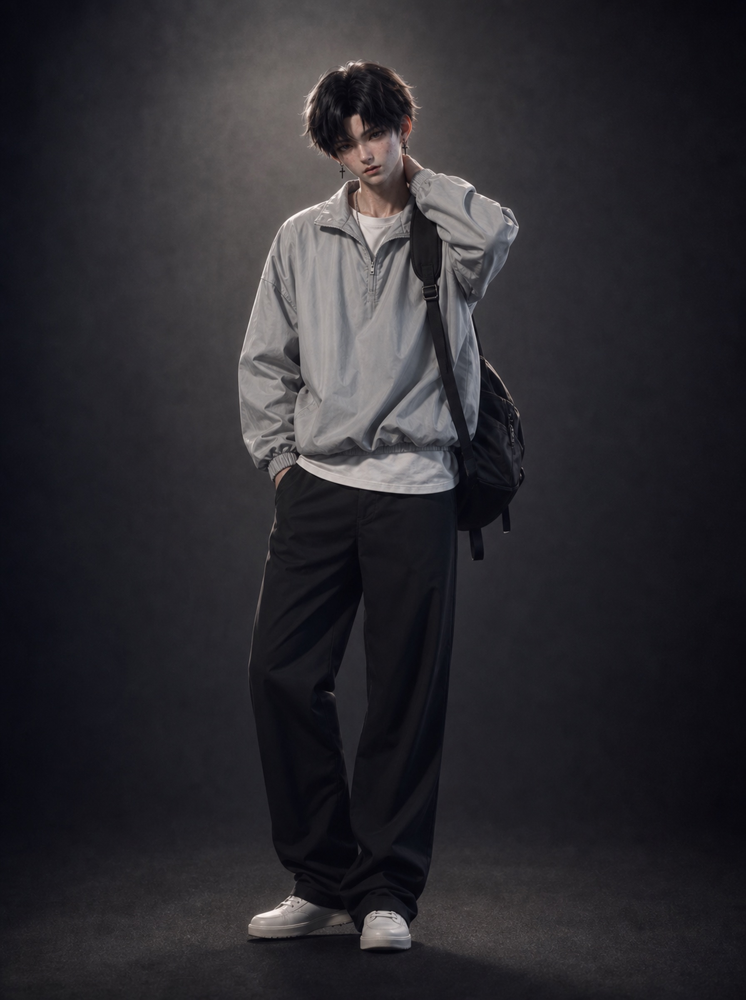

独立影像创作者 · 南京
想象，在此成片
用三维构建世界，用影像讲述故事。
从一个念头，到让人记住的画面。

精选放映01 / 05
剧情 / AI 短片
重置日
AI 影像 / 三维动画 / 动态视觉 / 剪辑向下发现更多
每个画面，都有来处
作品集
一些故事，一些实验。
在不同的媒介里，寻找自己的表达。
14 部作品
还没有找到这部作品
试试其他关键词，或查看全部作品。

我的数字人形象镜头背后
创作的起点，
是好奇心
你好，我是橘小桔，也叫 Highstrith。
我在南京，创作 AI 短片、三维动画和动态影像。从脚本、角色到剪辑与成片，我喜欢把不同的工具放在一起，让脑海里的世界有自己的光线、节奏和情绪。
这里既有完整的故事，也有尚在探索的视觉实验。比起固定的风格，我更在意每一次创作是否带来新的表达。
故事与影像三维与角色剪辑与后期
聊聊你的想法从一句「我有个想法」开始
中国 · 南京下一个画面，
一起完成
highstrith@gmail.com
+86 180 2016 9750微信 Gw1sgdsj_787